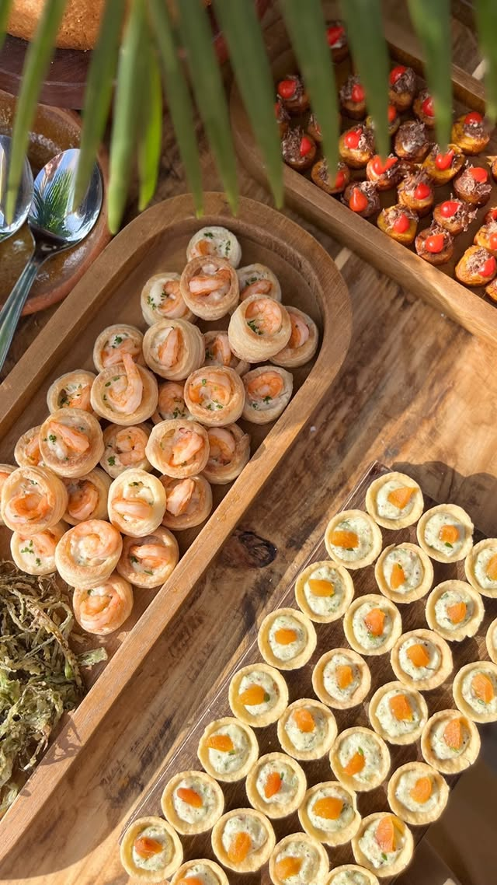
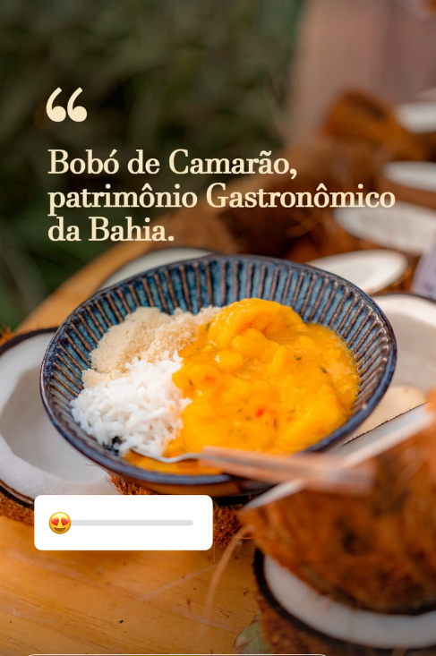
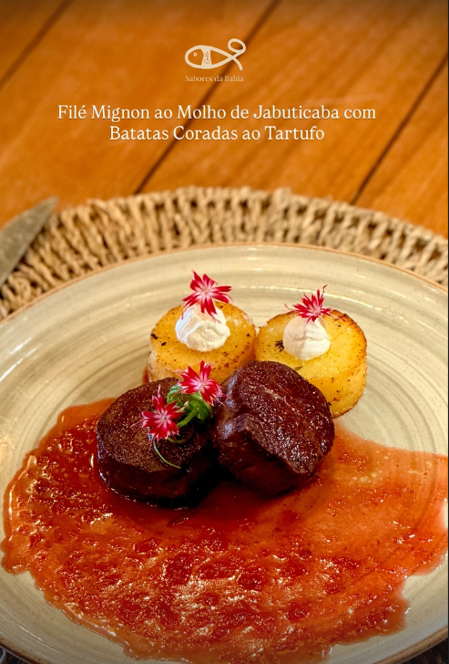
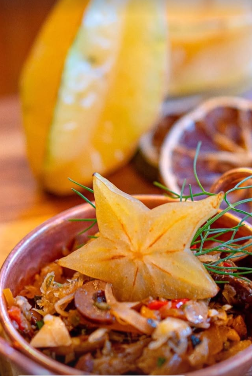
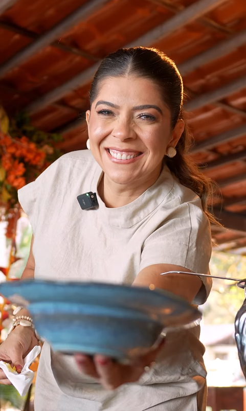

Experiências Gastronômicas
O scroll automático retorna após 7 segundos de inatividade manual.

Mesa de Entradas
Serviço Volante

Finger Food

Empratados

Ilha Baiana

A excelência do Gallo Porto Seguro no seu evento particular.
Levar a gastronomia do Gallo para o seu evento é garantir que a essência de Porto Seguro esteja presente em cada detalhe. Nosso serviço é completo e personalizado.

O scroll automático retorna após 7 segundos de inatividade manual.




A alma do Gallo reside na força do nosso tempero e no frescor absoluto dos nossos insumos. Especialistas em Frutos do Mar.